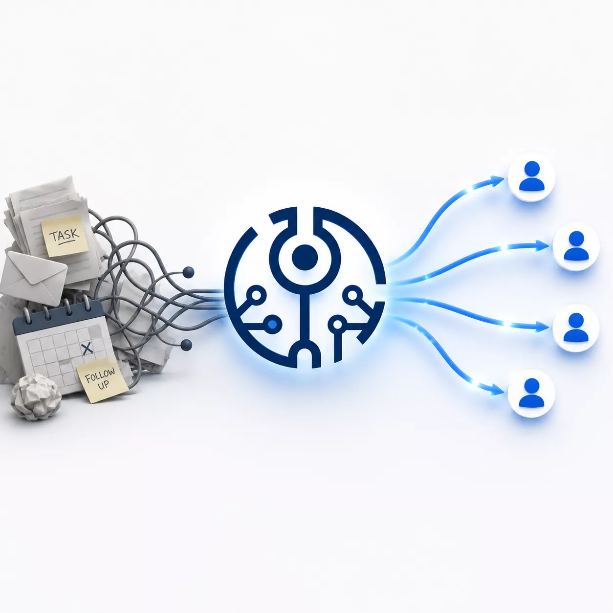

Interest often goes cold for a simple reason: nobody knew who should respond, what to say, or when to try again. TODD helps prioritize the contact, draft the next message, and keep the follow-up moving before the moment passes.
New here? Start with the CRM alternative guide.
Follow-ups that don’t feel like a chore.
TODD surfaces who to reach out to next, drafts a strong starting point, and keeps cadence going until the thread moves.

Prioritized contacts, drafted openers, and nudges — in one view.
The best follow-up system is the one that keeps moving when your attention shifts. TODD's Momentum System (MS) turns your contact list into consistent outreach — without babysitting a pipeline.
Connect CRM or upload CSV. TODD validates emails and enriches missing fields.
TODD scores contacts and highlights who to reach out to next.
Use AI suggestions for personalized openers, CTAs, and subject lines.
Set reminders and follow-up windows. TODD nudges you at the right time.
Log replies and actions. TODD updates status and recommends next-best steps.
No. TODD prepares and prioritizes contacts before they enter your CRM, keeping it clean and actionable.
No. TODD validates emails and enriches missing fields so you can start fast and improve quality as you go.
Yes. TODD suggests talking points and drafts, which you can edit before sending.
Yes. Enterprise teams can integrate SSO and run TODD alongside their CRM for governance and auditability.
Solo founders, small teams, nonprofits, chapters, and enterprise departments that need more movement in projects, prospect engagement, and documentation (proposals).
Want to earn by sharing TODD? Join the Affiliate Program.